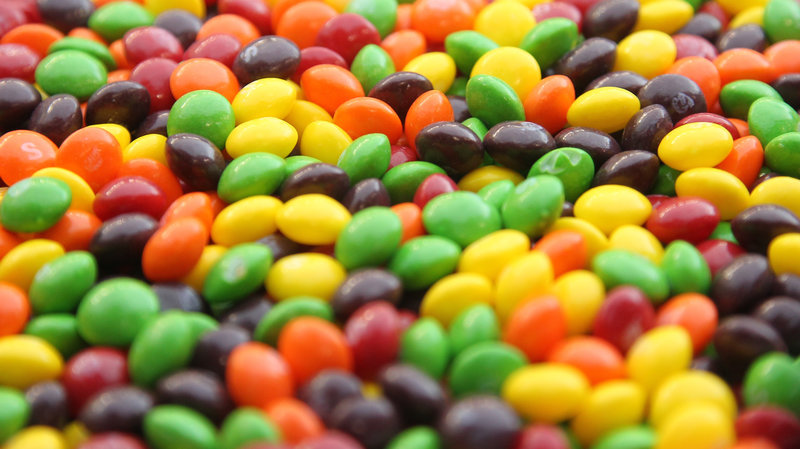
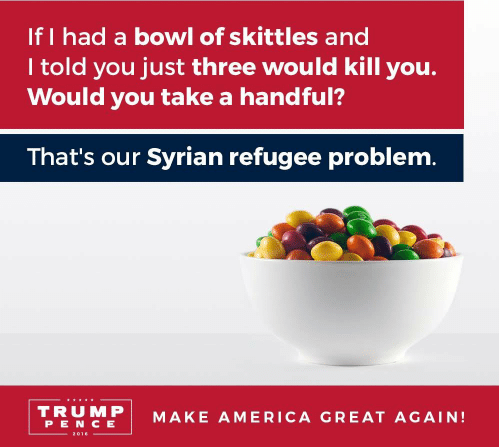

Taste The Outrage: Donald Trump Jr.'s Tweet Compares Refugees To Skittles

Social media have become home to two things in recent years: memes and public shaming.
Both came into play Monday night when Donald Trump Jr. tweeted an image of a bowl of Skittles, comparing Syrian refugees to poisoned candy. "If I had a bowl of Skittles and I told you three would kill you, would you take a handful?" the meme asks. "That's our Syrian refugee problem."
The post by the Republican presidential candidate's son immediately went viral. It earned the support and praise of many Trump supporters, who worry that an influx of refugees poses an existential security threat. It also drew condemnation from many who viewed the tweet as a flip, dehumanizing way to address a humanitarian catastrophe affecting more than 13 million people.

The makers of Skittles were quick to join the second camp. "Skittles are candy. Refugees are people," a spokeswoman for the candy's parent company, Wrigley, said in a widely distributed statement. "We don't feel it's an appropriate analogy. We will respectfully refrain from further commentary as anything we say could be misinterpreted as marketing."
Others were more direct in their response, posting graphic images of Syrian refugees and writing, "Not a Skittle."
And, as the Washington Post pointed out, the bowl of Skittles would have to be awfully large for Trump's analogy to be accurate: The odds of being killed by a refugee in a terrorist attack are about 1 in more than 3.6 billion, according to a recent Cato Institute study.